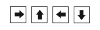

Pada materi kelas VII dan VIII, kalian sudah mempelajari struktur data daftar (list) dan tumpukan (stack). Pada kelas IX ini, kalian akan mempelajari dua struktur data lain yang sering digunakan dalam bidang Informatika, yaitu graf (graph) dan pohon (tree).
Apakah kalian pernah memerhatikan bagaimana struktur susunan kepengurusan dalam sebuah organisasi? Struktur organisasi tersebut biasanya digambarkan dengan struktur pohon seperti yang diberikan pada Gambar 2.2.
Struktur pohon menggambarkan sebuah hierarki. Ciri dari struktur pohon ialah bahwa “anak” (child) yang hierarkinya lebih rendah, hanya mempunyai satu “orang tua” (parent). Anak yang orang tuanya sama, sama levelnya, disebut “bersaudara”. Dalam bidang Informatika, dikenal juga struktur data graf (graph) seperti yang diberikan pada Gambar 2.3.
Struktur data graf dapat digunakan untuk merepresentasikan data dalam berbagai kasus, misalnya jalan yang menghubungkan 2 tempat. Secara spesifik, misalnya menggambarkan jalur kereta api dari suatu kota ke kota lain. Jika kita menggunakan kasus jalur kereta api, Gambar 2.3 dapat diartikan menjadi seperti berikut: terdapat jalur kereta api yang menghubungkan Kota A dan Kota D, terdapat jalur kereta api yang menghubungkan Kota A dan Kota C, Kota B dan Kota E tidak terhubung langsung melalui jalur kereta api, dst. Walaupun tidak terhubung langsung, jika kita ingin bepergian dari Kota B ke Kota E, maka kita dapat memanfaatkan jalan dari B ke A, kemudian ke Kota C.
Hubungan dapat seperti yang disebutkan (dua arah) dan digambarkan sebagai busur yang menghubungkan data. Hubungan juga dapat hanya satu arah, misalnya jika jalan penghubung ada yang satu arah, dan ada yang dua arah, penghubung digambarkan sebagai “anak panah” yang berarah. Contoh: misalnya jalan dari A ke C hanya searah, yaitu dari A menuju C, sedangkan jalan lainnya dua arah, grafnya menjadi seperti Gambar 2.4.
Hubungan searah atau dua arah tersebut dapat dimodelkan menjadi graf pada Gambar 2.4. Graf adalah sebuah model tentang hubungan antardata.
Kalian tentu sudah tidak merasa asing lagi dengan ekspresi aritmatika seperti yang ditunjukkan pada Gambar 2.4.
Pada Gambar 2.5, terdapat ekspresi aritmatika sederhana yang terdiri dari tiga buah operand (1, 2, 3) dan tiga dua operator (+, x). Operan dan perator telah kalian kenal dalam Aktivitas Teka-teki Operasi Perhitungan pada Bab Berpikir Komputasional Kelas 8. Gabungan dari operator dan operand tersebut disebut dengan ekspresi aritmatika. Sedangkan proses untuk melakukan perhitungan operand-operand berdasarkan operator terkait, disebut dengan operasi. Melalui soal berikut ini, kalian akan diperkenalkan pada operator, ekspresi, dan operasi logika.
Dalam kehidupan sehari-hari, kalian dapat menemukan kegiatan yang perlu dilakukan berulang kali. Misalnya, ketika makan, kalian berulang kali menyuap makanan tersebut ke dalam mulut; ketika berjalan, kalian berulang kali melangkahkan kaki; dalam satu minggu, tentu ada kegiatan yang kalian lakukan berulang kali, yaitu sekolah – mengerjakan tugas – belajar. Masih banyak contoh lainnya yang dapat kalian amati dan dapati bahwa kalian sedang melakukan perulangan.
Yola sedang menyusun sekumpulan tanda panah yang dapat mengarahkan bola hijau tersebut menuju pintu keluar yang ditandai dengan x.
Jenis tanda panah yang dimiliki oleh Yola adalah 
Yola hanya diperbolehkan menggunakan 8 buah tanda panah. Sekumpulan tanda panah yang disusun oleh Yola akan diulang sebanyak 4 kali. Bola hanya dapat bergerak di kotak yang berwarna putih.
Tantangan:Isilah kotak-kotak berikut dengan 8 tanda panah yang dapat mengarahkan bola hijau menuju kotak yang ditandai dengan ‘x’!
Jika kalian tertarik dengan materi ini dan ingin mendalaminya lebih jauh, berikut link yang bisa diakses:
Struktur data graf (graph)
Struktur data pohon (tree)
Data Structure for KidsPowered by w3.css